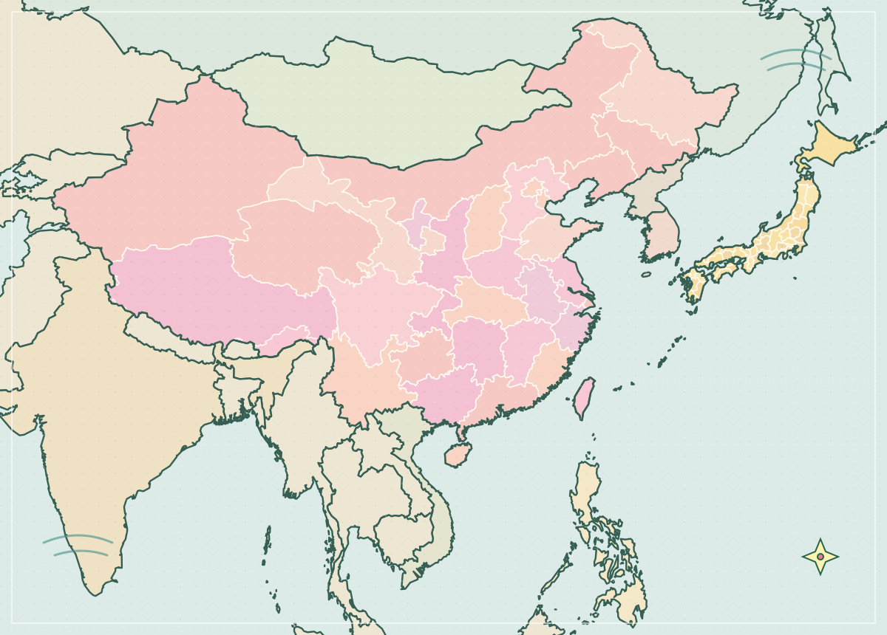

2026 · BIRTHDAY QUEST
礼物寄存站

夜班站长 01 / 06
点一下，听我慢慢说
那些小小的、特别的东西
散落的回忆
翻开两张，找到相同的纪念物，把我们的回忆一对对找回来。
CLUE 02 / 03 · FOUND
第二条线索已解锁
8 对卡片都找到了。
这些小小的东西，都是我们的回忆。
点卡片翻面 · 配好的卡片也可以再点开看看
不计时，慢慢来 ✦影子大盗留下的录像带
把故事接起来
WAITING FOR TAPE
选一盘录像带来播放
GIFT STATION · VIDEO PLAYER
还没有播放录像
PLAY ORDER
0 / 6 已放入播放顺序
看完全部录像并放好带子后核对；带子可以反复调整。
CLUE 03 / 03 · FOUND
第三条线索已解锁
录像带已经排回正确顺序。
01 / 08 · OVERVIEW
地图

夜班站长 ✳01 / 03
CLUE 01 / 03 · FOUND
第一条线索已解锁
17 / 17 张照片已固定。